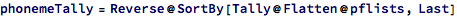
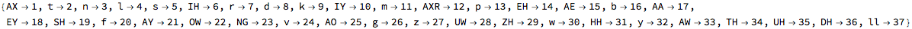
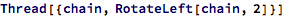

definitions
SQLlite database connection


getNameCounts
phoneticforms

pflists


allPhonemes



nameCountsToAdjPhonemeCounts

nameCountsToD2PhonemeCounts
mergeAdjPhonemeCounts
phoneme2index, index2phoneme




randomWord

frequencies of phonemes at distance 2
from english dictionary


frequencies of phonemes at distance 2
from liked names
transition matrix for phonemes at distance 2
frequencies of phonemes at distance 1
from english dictionary
frequencies of phonemes at distance 1
from liked names


generate markov chain

score the chain according to phonemes at distance 2

but be careful for the word boundary: don’t wrap around
the total of the distance-2 transition matrix entries can be used to score a particular chain
use distance-2 phoneme correlations to prioritize names generated using the markov chain